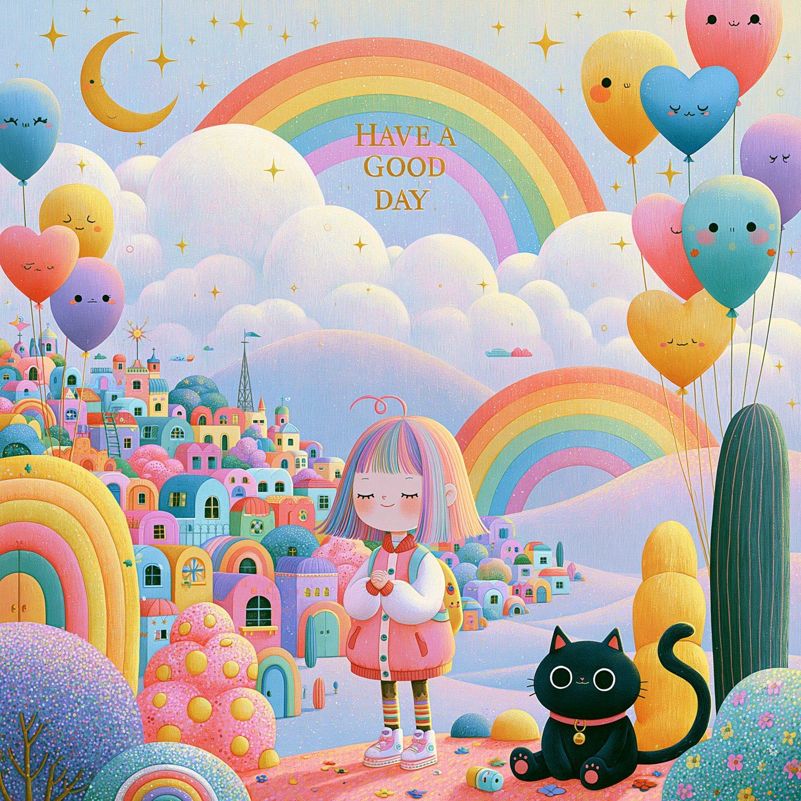

20초 동화 단편 따라 만들기
「말하는 고양이, 먹물」
오늘은 예시 하나를 그대로 따라 만들어요. 인물·이야기·카메라 무빙이 모두 정해져 있어서, 노란 복사 버튼 → 붙여넣기(Ctrl+V)만 하면 돼요.
10초 영상 2개 + 배경음악 → 1080p 완성 → 내 휴대폰으로 보내기.
1오늘의 로그라인
로그라인 = 이야기 전체를 한 문장으로 줄인 것. 영화 포스터 아래 적힌 한 줄 소개예요.힘든 하루를 보낸 사람에게만 말을 거는 검은 고양이 먹물이, 파스텔 마을 언덕 벤치에서 한숨 쉬는 다정에게 오늘 처음으로 입을 연다. "난 힘든 사람한테만 들려. 내일 안 들리면, 좋은 날인 거야."

▲ 오늘의 그림체 레퍼런스 — 3·4번에서 이 그림을 챗GPT에 올리고 시작해요 (과슈 질감 · 둥근 집 마을 · 무지개 · 얼굴 있는 풍선)
검은 고양이. 동그란 흰 눈·분홍 목걸이·금색 방울. 힘든 사람에게만 말을 건다. 느긋하고 낮은 목소리
성인 여성(20대 후반). 무지개색 단발·분홍 가디건. 오늘 하루가 힘들었다. 고양이가 말하자 깜짝 놀람
⚠️ 사람 인물은 꼭 성인으로 써요. 어린아이로 쓰면 플로우가 "미성년자 정책" 오류로 영상을 안 만들어 줘요.
2콘티와 대사 만들기
챗GPT 콘티 = 컷마다 무엇이 보이고, 카메라가 어떻게 움직이고, 누가 무슨 말을 하는지 적은 영화 설계도.컷 = 끊기지 않고 한 번에 찍은 장면 하나. 오늘은 10초짜리 컷 2개예요.
- 챗GPT에서 왼쪽 위 새 채팅
- 가운데 「ChatGPT에게 물어보세요」 칸에 프롬프트 붙여넣기 → Enter → 콘티 표가 나와요

▲ 챗GPT 첫 화면 — 왼쪽 위 「새 채팅」, 가운데 입력 칸
너는 동화 그림책 애니메이션 단편 감독이야. 아래 로그라인과 인물로 20초 영상의 콘티와 대사를 만들어 줘. [로그라인] 힘든 하루를 보낸 사람에게만 말을 거는 검은 고양이 먹물이, 파스텔 마을 언덕 벤치에서 한숨 쉬는 다정에게 오늘 처음으로 입을 연다. "난 힘든 사람한테만 들려. 내일 안 들리면, 좋은 날인 거야." [인물] - 먹물: 검은 고양이. 통통하고 둥근 몸, 동그란 흰 눈에 검은 눈동자, 분홍 목걸이에 금색 방울. 느긋하고 낮은 목소리. 힘든 사람에게만 말을 건다 - 다정: 성인 여성(20대 후반). 어깨 길이 무지개색 단발(분홍·보라·민트·노랑), 분홍 가디건에 흰 티, 민트색 바지. 오늘 하루가 힘들었다. 고양이가 말하자 깜짝 놀란다 [장소] 해 질 무렵의 파스텔 색 언덕 마을. 둥근 색색의 집들이 쌓여 있는 언덕, 나무 벤치 하나, 하늘에 구름과 무지개, 얼굴이 그려진 풍선들, 금색 별 [조건] - 컷 2개, 컷마다 10초, 가로 16:9 화면 - 그림체는 납작한 2D 동화 그림책(과슈 질감, 파스텔 색, 윤곽선 없음). 3D·실사 아님 - 두 인물 모두 손(앞발)에 아무것도 들지 않음 - 대사는 모두 한국어로. 한 인물이 한 컷에 1~2마디, 짧게 - 카메라는 컷마다 반드시 움직여야 해. 고정 화면(static)은 쓰지 마 - 카메라 무빙은 아래 그대로: 컷 1: 0~5초 벤치의 두 인물이 함께 보이는 투샷(Two Shot)에서 천천히 다가가기(Push In) → 5~10초 깜짝 놀란 다정의 얼굴로 더 다가가기 컷 2: 0~5초 낮은 곳에서 올려다보는 로우 앵글(Low Angle) 투샷 → 5~10초 천천히 위로 올리기(Tilt Up)로 무지개와 풍선이 떠 있는 하늘로 - 중학생도 이해할 수 있는 쉬운 말로 [이렇게 정리해 줘] 콘티 표: | 컷 | 시간 | 화면 크기 | 카메라 무빙 | 인물 동작·표정 | 대사 | 화면 크기와 카메라 무빙은 한글로 쓰고 영어 용어를 괄호에 넣어 줘.
오늘 진행할 콘티 (챗GPT 결과는 조금씩 달라요. 영상은 이 콘티대로 만들어요.)
| 컷 | 카메라 무빙 | 동작 · 대사 |
|---|---|---|
| 1 0~10초 놀람 | 투샷에서 천천히 다가가기 (Two Shot · Push In) → 다정 얼굴로 더 다가가기 | 다정이 벤치에 앉아 한숨을 쉰다. 옆에 먹물. 먹물: "오늘… 많이 힘들었지?" 다정이 화들짝 고양이를 돌아본다. 다정: "지, 지금 말했어?!" 먹물: "응. 원래는 말 안 하는데." |
| 2 10~20초 위로 | 로우 앵글 투샷 (Low Angle) → 천천히 위로 올리기 (Tilt Up) | 다정이 한 발 물러나 쪼그려 앉으며 눈을 크게 뜬다. 다정: "진짜… 말을 하네?! 어떻게 이럴 수가?" 먹물: "오늘 힘들었잖아. 난 힘든 사람한테만 들려." 먹물: "내일 안 들리면, 좋은 날이야." 다정이 피식 웃고, 하늘에 풍선과 무지개가 떠오른다. |
3캐릭터 시트 만들기 (2명)
챗GPT 캐릭터 시트 = 한 인물을 앞 · 뒤 · 얼굴 3칸으로 보여 주는 "인물 신분증". 이게 있어야 영상 2개에서 얼굴·옷·크기가 안 바뀌어요.① 먼저 그림체 레퍼런스 받기 — 이 그림을 챗GPT에 같이 올려야 똑같은 그림체가 나와요.

② 챗GPT에서 만들기
- 챗GPT 새 채팅 → 입력 칸 왼쪽 + → 스타일.jpg 올리기
- 그 아래에 프롬프트 붙여넣기 → Enter (프롬프트 첫 줄이 "첨부한 그림과 똑같은 그림체로"예요 — 그림을 안 올리면 다른 그림체가 나와요)
- 이미지 ⬇ 다운로드 → 파일 이름을 먹물.jpg로 저장
- 다정도 새 채팅에서 똑같이(그림 올리기 → 프롬프트) → 다정.jpg로 저장
🆘 챗GPT가 "이미지 생성 한도" 때문에 안 만들어 주면, 강사에게 말해 주세요. 같은 그림과 프롬프트로 다른 곳(매그니픽)에서 만들어 드려요.

▲ 이렇게 나와야 해요 — 왼쪽 앞모습 · 가운데 뒷모습 · 오른쪽 얼굴 (이 프롬프트로 만든 실제 결과)
첨부한 그림과 똑같은 그림체(과슈 종이 질감, 파스텔 색, 윤곽선 없는 둥근 색면, 점박이 무늬, 금색 반짝이 별)로 아래 캐릭터 시트 이미지를 가로 16:9 비율로 만들어 줘. 첨부 그림의 검은 고양이를 그대로 주인공으로. [인물] 검은 고양이 먹물. 통통하고 둥근 몸, 짧은 다리, 둥글게 말린 꼬리. 얼굴은 아주 크고 동그란 흰 눈에 작은 검은 눈동자(눈이 얼굴의 절반), 작은 분홍 코, 살짝 웃는 작은 입, 분홍 귀 안쪽, 볼에 옅은 홍조. 목에 분홍 목걸이와 금색 방울 하나. 앞발 바닥은 분홍 젤리. 그 외 장신구·옷 없음. [캐릭터 시트 형식 — 꼭 이대로] 가로 16:9 이미지 1장을 같은 너비의 세로 3칸으로 나누기. 배경은 완전한 흰색, 칸 사이 선·테두리·글자 없음. - 왼쪽 칸: 전신 정면, 앉은 자세로 카메라를 보는 모습. 머리 끝부터 꼬리·발까지 다 보이게. - 가운데 칸: 전신 뒷모습, 같은 앉은 자세. 등과 둥글게 말린 꼬리가 보이게. - 오른쪽 칸: 정면 얼굴 클로즈업, 얼굴이 칸을 꽉 채우게 크게. 목걸이와 방울까지 보이게. - 왼쪽과 가운데 인물은 크기·앉은 위치가 완전히 똑같다. 발 아래에 여백이 있게. - 세 칸 모두 같은 고양이, 같은 목걸이. [그림체 — 꼭 이대로] 납작한 2D 동화 그림책 일러스트. 과슈(불투명 수채)와 색연필로 그린 듯한 거칠고 포근한 종이 질감, 연분홍·연보라·민트·레몬·살구색 파스텔 색, 검은 윤곽선 없이 색면으로 그린 둥글둥글한 모양, 작은 금색 반짝이 별. 그림자 거의 없이 밝고 평평한 빛. 3D·실사 느낌 없음. 고양이 털은 검정이지만 짙은 남색 기운이 살짝 도는 부드러운 색면.

▲ 이렇게 나와야 해요 — 왼쪽 앞모습(머리 없음, 목 단면만) · 가운데 뒷모습 · 오른쪽 얼굴
첨부한 그림과 똑같은 그림체(과슈 종이 질감, 파스텔 색, 윤곽선 없는 둥근 색면, 점박이 무늬, 금색 반짝이 별)로 아래 캐릭터 시트 이미지를 가로 16:9 비율로 만들어 줘. 첨부 그림의 무지개색 단발 인물과 같은 얼굴 스타일이지만, 어린이가 아니라 키 큰 성인 여성으로. [인물] 성인 여성 다정(20대 후반). 키 큰 성인 비율(7등신), 성인의 얼굴. 어깨까지 오는 단발머리인데 색이 무지개처럼 분홍·보라·민트·노랑으로 부드럽게 섞여 있고 앞머리는 일자. 눈은 가늘고 차분하게 살짝 감은 듯한 모양, 볼에 둥근 홍조, 작은 입. 옷: 분홍색 긴 가디건(단추 달림) 안에 흰색 긴팔 티셔츠, 민트색 긴 바지, 흰 운동화. 장신구·가방 없음. [캐릭터 시트 형식 — 꼭 이대로] 가로 16:9 이미지 1장을 같은 너비의 세로 3칸으로 나누기. 배경은 완전한 흰색, 칸 사이 선·테두리·글자 없음. 가장 중요한 규칙: 왼쪽 칸에는 머리와 얼굴이 절대 보이지 않는다. 인형의 머리를 빼낸 것처럼 목 윗부분이 짧은 목 단면으로 끝나고, 그 위는 흰 배경이다. 목 아래부터 발끝까지만 보인다. - 왼쪽 칸: 전신 정면, 목 단면부터 발끝까지. 머리·얼굴·머리카락 없음. 두 팔은 몸 옆에 자연스럽게 내리고 손은 비어 있음. - 가운데 칸: 전신 뒷모습, 머리 끝부터 발끝까지 다 보이게. - 오른쪽 칸: 정면 얼굴 클로즈업, 머리 위부터 가슴까지, 카메라를 똑바로 보는 모습. 얼굴이 칸을 꽉 채우게 크게. - 왼쪽과 가운데 인물은 키·몸 크기·발 위치가 완전히 똑같다. 두 칸 모두 발끝이 같은 높이의 바닥에 닿고, 발 아래에 여백이 있게. - 세 칸 모두 같은 사람, 같은 옷, 같은 머리 모양, 같은 신발. [그림체 — 꼭 이대로] 납작한 2D 동화 그림책 일러스트. 과슈(불투명 수채)와 색연필로 그린 듯한 거칠고 포근한 종이 질감, 연분홍·연보라·민트·레몬·살구색 파스텔 색, 검은 윤곽선 없이 색면으로 그린 둥글둥글한 모양, 작은 금색 반짝이 별. 그림자 거의 없이 밝고 평평한 빛. 3D·실사 느낌 없음.
✔️ 확인 2가지: ① 다정 시트 왼쪽 칸에 머리가 없어야 해요 (목 아래부터만). 이게 있어야 플로우가 오른쪽 얼굴만 읽어서 얼굴이 안 바뀌어요. ② 왼쪽(앞)과 가운데(뒤) 인물의 키와 발 위치가 같은지 보세요.
왼쪽 칸에 머리가 보이면, 같은 채팅에 아래 수정 프롬프트를 넣으세요. 그래도 안 되면 새 채팅에서 처음부터 다시.
좋아, 키와 크기는 이대로 완벽해. 딱 하나만 고쳐 줘: 왼쪽 칸(전신 정면) 인물의 머리를 빼낸 것처럼 목 윗부분을 짧은 목 단면으로 끝내고, 머리·얼굴·머리카락은 전혀 보이지 않게 그 자리를 흰 배경으로 비워 줘. 목 아래부터 발끝까지는 지금 크기와 위치 그대로. 가운데·오른쪽 칸은 바꾸지 마.
4공간 시트 만들기
챗GPT 공간 시트 = 촬영 장소를 여러 방향·여러 크기로 그린 그림 모음. 카메라가 움직여도 배경이 바뀌지 않게 해 줘요.- 챗GPT 새 채팅 → + → 스타일.jpg 올리기 → 프롬프트 붙여넣기 → Enter
- 이미지 ⬇ 다운로드 → 파일 이름을 파스텔마을.jpg로 저장

▲ 이렇게 나와야 해요 — 윗줄 전경 2장(눈높이 · 내려다보기) · 아랫줄 디테일 5장
첨부한 그림과 똑같은 그림체(과슈 종이 질감, 파스텔 색, 윤곽선 없는 둥근 색면, 점박이 무늬 둥근 나무, 얼굴 있는 풍선, 금색 반짝이 별, 웃는 초승달)로 아래 공간 시트 이미지를 가로 16:9 비율로 만들어 줘. 첨부 그림의 마을·하늘·풍선을 그대로 쓰되 사람과 고양이는 없이. [공간] 해 질 무렵의 파스텔 색 언덕 마을. 둥근 지붕과 아치형 창문이 달린 연분홍·연보라·민트·레몬색 작은 집들이 언덕 위에 층층이 쌓여 있고, 집 사이에 점박이 무늬의 둥근 나무들. 언덕 꼭대기 풀밭에 연한 살구색 나무 벤치 하나. 하늘은 연보라·연분홍 파스텔, 뭉게구름, 큰 무지개, 웃는 얼굴이 그려진 하트·둥근 풍선들이 줄에 매달려 떠 있고, 금색 반짝이 별과 웃는 초승달. 사람·동물 없음. 글자·간판·로고 없음. [공간 시트 형식 — 꼭 이대로] 연한 아이보리색 종이 배경 위에 그림 7장을 콜라주로 배치. 그림 사이에는 얇은 아이보리 여백. - 윗줄: 가로로 넓은 그림 2장 · 왼쪽: 벤치 앞에서 눈높이로 바라본 벤치와 뒤쪽 언덕 마을·무지개 · 오른쪽: 높은 곳에서 내려다본 마을 전체 — 쌓인 집들, 벤치가 있는 풀밭, 구름 (하이 앵글, high angle) - 아랫줄: 세로로 긴 그림 5장, 각각 다른 각도의 디테일 · 얼굴이 그려진 풍선들과 무지개 클로즈업 · 벤치에서 올려다본 하늘 — 구름·별·초승달 (로우 앵글) · 둥근 집들이 층층이 쌓인 골목 · 점박이 무늬 둥근 나무와 작은 꽃들 · 벤치 옆 풀밭에 떨어진 작은 꽃잎과 색종이 - 7장 모두 같은 장소, 같은 시간대, 같은 빛 [그림체 — 꼭 이대로] 납작한 2D 동화 그림책 일러스트. 과슈(불투명 수채)와 색연필로 그린 듯한 거칠고 포근한 종이 질감, 연분홍·연보라·민트·레몬·살구색 파스텔 색, 검은 윤곽선 없이 색면으로 그린 둥글둥글한 모양, 작은 금색 반짝이 별. 그림자 거의 없이 밝고 평평한 빛. 3D·실사 느낌 없음.
5플로우에 캐릭터·공간 등록하기
구글 플로우 캐릭터 등록 = 인물 그림에 이름·목소리·설명을 붙여 저장하는 것. 목소리를 정해 두면 영상마다 같은 목소리로 말해요. 한 번 등록하면 영상마다 @로 불러올 수 있어요.① 캐릭터는 반드시 등록하고, 영상 프롬프트에서 @로 불러옵니다. 등록 없이 글로만 만들면 영상①과 ②에서 얼굴·옷·목소리가 전부 달라져요.
② 캐릭터 정보 첫 줄에 "반드시 한국어로만 말한다"를 넣습니다. 이 줄이 없으면 영어로 말하는 영상이 나와요. 아래 캐릭터 정보는 그대로 복사하면 돼요.
① 새 프로젝트
- 구글 플로우 로그인 → + 새 프로젝트
- 왼쪽 위 프로젝트 이름(날짜) 클릭 → 먹물 입력 → Enter
② 먹물 캐릭터 만들기
- 왼쪽 메뉴 캐릭터 → + 신규 캐릭터 → 아래 업로드 → 먹물.jpg
- 「제목 없는 캐릭터」 옆 ✏️ → 먹물 입력 → Enter
- 캐릭터 정보 칸에 아래 글 붙여넣기
반드시 한국어(Korean)로만 말한다. 영어·일본어·중국어 대사 절대 금지. 자막 없음. 검은 고양이 먹물. 힘든 하루를 보낸 사람에게만 말을 건다. 느긋하고 낮은 목소리로 천천히, 짧게 말한다. 파스텔 동화 그림책 애니메이션 캐릭터. 얼굴·목걸이·방울은 등록된 그림과 항상 똑같이.
- 음성 선택 → 위 검색 칸에 Puck 입력 → 클릭 (Male, upbeat, mid pitch)
- 목소리 칸에 Puck이 보이면 오른쪽 위 완료
→ 창이 그대로 열려 있으면 아래 캐릭터에 추가를 누르세요.
③ 다정 캐릭터 만들기 — ②와 똑같이, 그림은 다정.jpg, 목소리는 Achernar (Female, soft, high pitch)
반드시 한국어(Korean)로만 말한다. 영어·일본어·중국어 대사 절대 금지. 자막 없음. 성인 여성 다정(20대 후반). 오늘 하루가 힘들어 지쳐 있다가, 고양이가 말을 걸자 깜짝 놀란다. 처음엔 작고 떨리는 목소리, 마지막엔 피식 웃는다. 파스텔 동화 그림책 애니메이션 캐릭터. 얼굴·머리색·옷은 등록된 그림과 항상 똑같이.
④ 파스텔 마을 공간 시트 올리기
- 왼쪽 메뉴 전체 미디어 → 아래 프롬프트 창 왼쪽 + → 미디어 업로드 → 파스텔마을.jpg
파일 이름이 그대로 이름표가 돼요. 그래서 3·4단계에서 먹물 · 다정 · 파스텔마을로 저장해 두는 게 중요해요. 영상을 만들 때 @ 다음에 이 이름을 입력해서 찾아요.
6영상 ① 만들기 (10초 · 놀람)
구글 플로우 옴니(Omni) = 등록한 캐릭터의 얼굴과 목소리를 그대로 살려 영상을 만드는 구글의 AI 모델. 크레딧 = AI를 쓸 때마다 빠지는 포인트(무료 하루 50개).→ 맨 아래 "생성 시 15 크레딧이 사용됩니다" 확인
목록에 Omni 1.1 Flash가 없으면 Omni 1.2 Flash(30 크레딧)를 고르세요. 그러면 하루 무료로 영상 1개만 돼요 — 두 번째는 강사에게 말해 주세요.
- 프롬프트 창에 아래 프롬프트 붙여넣기
- 노란 칸 [@파스텔마을] [@먹물] [@다정]을 하나씩 지우고 → @ 입력 → 이름 입력 → Enter
→ 그 자리에 회색 이름표가 생기고, 창 위에 작은 그림이 붙어요.
✔️ 창 위에 작은 그림이 3개(마을·다정·먹물) 붙어 있는지 꼭 확인! 하나라도 없으면 그 인물은 등록된 얼굴·목소리로 안 나와요. - 오른쪽 → 버튼 → 1~3분 기다리기
⌨️ 프롬프트 창에서 Enter를 누르면 바로 전송돼요. 줄을 바꾸고 싶으면 Shift+Enter. 복사해서 붙여넣으면 줄바꿈이 그대로 들어가니 걱정 없어요.
[중요] 모든 대사는 반드시 한국어(Korean)로만. 영어 대사 절대 금지. 등장인물은 등록된 캐릭터 그대로. [@파스텔마을] 언덕 꼭대기의 나무 벤치, 해 질 무렵의 연보라·연분홍 하늘, 뒤로 둥근 집들이 쌓인 파스텔 마을과 무지개, 얼굴이 그려진 풍선들. 그림체는 납작한 2D 동화 그림책, 과슈 종이 질감, 파스텔 색, 윤곽선 없음. 3D·실사 아님. [@다정](성인 여성)이 벤치에 앉아 어깨를 늘어뜨리고 길게 한숨을 쉰다. 옆자리에 [@먹물](검은 고양이)이 앉아 있다. 먹물이 다정을 올려다보며 한국어로 느긋하게 말한다: "오늘… 많이 힘들었지?" 다정이 화들짝 놀라 고양이를 돌아보며 한국어로 더듬더듬 말한다: "지, 지금 말했어?!" 먹물이 눈을 깜빡이며 한국어로 말한다: "응. 원래는 말 안 하는데." 두 인물 모두 손과 앞발에 아무것도 들지 않는다. 벤치 위에도 물건 없음. 카메라: 0~5초 두 인물이 함께 보이는 투샷(Two Shot)에서 천천히 다가가기(Push In) → 5~10초 깜짝 놀란 다정의 얼굴로 더 천천히 다가가기. 눈높이(eye level). 얼굴·옷·목소리는 등록된 [@먹물], [@다정]과 완전히 똑같이. 다른 사람·다른 고양이로 바꾸지 않는다. 모든 대사는 반드시 한국어(Korean). 영어로 말하지 않음. 영어 단어 섞지 않음. 음악 없음, 배경음악 없음, 자막 없음, 화면에 글자 없음.
⚠️ x1인지 꼭 확인! x2면 크레딧이 두 배로 빠져요.
7영상 ② 만들기 (10초 · 위로)
구글 플로우설정은 6번과 똑같아요. 프롬프트를 바꿔 넣고, 노란 칸을 @로 바꿔 주세요.
[중요] 모든 대사는 반드시 한국어(Korean)로만. 영어 대사 절대 금지. 등장인물은 등록된 캐릭터 그대로. [@파스텔마을] 언덕 꼭대기의 같은 나무 벤치 앞 풀밭, 해 질 무렵의 연보라·연분홍 하늘, 뒤로 파스텔 마을과 무지개, 얼굴이 그려진 풍선들. 그림체는 납작한 2D 동화 그림책, 과슈 종이 질감, 파스텔 색, 윤곽선 없음. 3D·실사 아님. [@다정](성인 여성)이 벤치 앞 풀밭에 쪼그려 앉아 [@먹물](검은 고양이)과 눈높이를 맞춘다. 두 손으로 볼을 감싸고 놀란 얼굴로 한국어로 빠르게 말한다: "진짜… 말을 하네?! 어떻게 이럴 수가?" 먹물이 꼬리를 천천히 흔들며 한국어로 말한다: "오늘 힘들었잖아. 난 힘든 사람한테만 들려." 먹물이 다정을 올려다보며 한국어로 말한다: "내일 안 들리면, 좋은 날이야." 대사 3개를 10초 안에 모두 말한다. 마지막 대사까지 끝낸 뒤 영상이 끝난다. 다정이 피식 웃는다. 하늘로 풍선들이 천천히 떠오르고 무지개가 더 밝아진다. 두 인물 모두 손과 앞발에 아무것도 들지 않는다. 카메라: 0~5초 풀밭 높이의 낮은 곳에서 올려다보는 로우 앵글(Low Angle) 투샷 → 5~10초 천천히 위로 올리기(Tilt Up)로 풍선과 무지개가 떠 있는 하늘로. 얼굴·옷·목소리는 등록된 [@먹물], [@다정]과 완전히 똑같이. 다른 사람·다른 고양이로 바꾸지 않는다. 모든 대사는 반드시 한국어(Korean). 영어로 말하지 않음. 영어 단어 섞지 않음. 음악 없음, 배경음악 없음, 자막 없음, 화면에 글자 없음.
⚠️ 영상에 물건이 손에 생기거나 고양이 입이 안 움직이면 그 영상은 버리고 다시 생성하세요.
🗣️ 영어로 말하는 영상이 나오면 → 5번으로 돌아가 캐릭터 정보 첫 줄에 "반드시 한국어로만 말한다"가 있는지 확인하고, 프롬프트 첫 줄 [중요] 문장을 지우지 않았는지 확인한 뒤 다시 생성하세요.
🆘 플랜 B — "미성년자 관련 정책 위반" 오류가 뜰 때
플로우가 캐릭터 그림을 아이로 잘못 보면 영상을 안 만들어 줘요(크레딧은 환불돼요). 그럴 땐 아래 프롬프트로 바꿔요 — 캐릭터 @ 없이 글로만 인물을 설명하고, [@파스텔마을]만 @로 넣어요.
[중요] 모든 대사는 반드시 한국어(Korean)로만. 영어 대사 절대 금지. [@파스텔마을] 언덕 꼭대기의 나무 벤치, 해 질 무렵의 연보라·연분홍 하늘, 뒤로 둥근 집들이 쌓인 파스텔 마을과 무지개, 얼굴이 그려진 풍선들. 그림체는 납작한 2D 동화 그림책, 과슈 종이 질감, 파스텔 색, 윤곽선 없음. 3D·실사 아님. 다정: 성인 여성(20대 후반), 어깨 길이 무지개색(분홍·보라·민트·노랑) 단발, 분홍 가디건에 흰 티, 민트 바지. 벤치에 앉아 어깨를 늘어뜨리고 길게 한숨을 쉰다. 먹물: 통통한 검은 고양이, 동그란 흰 눈, 분홍 목걸이에 금색 방울. 옆자리에 앉아 있다. 먹물이 다정을 올려다보며 한국어로 느긋하게 말한다: "오늘… 많이 힘들었지?" 다정이 화들짝 놀라 고양이를 돌아보며 한국어로 더듬더듬 말한다: "지, 지금 말했어?!" 먹물이 눈을 깜빡이며 한국어로 말한다: "응. 원래는 말 안 하는데." 두 인물 모두 손과 앞발에 아무것도 들지 않는다. 카메라: 0~5초 두 인물이 함께 보이는 투샷(Two Shot)에서 천천히 다가가기(Push In) → 5~10초 깜짝 놀란 다정의 얼굴로 더 천천히 다가가기. 눈높이(eye level). 모든 대사는 반드시 한국어(Korean). 영어로 말하지 않음. 음악 없음, 배경음악 없음, 자막 없음, 화면에 글자 없음.
[중요] 모든 대사는 반드시 한국어(Korean)로만. 영어 대사 절대 금지. [@파스텔마을] 언덕 꼭대기의 같은 나무 벤치 앞 풀밭, 해 질 무렵의 연보라·연분홍 하늘, 뒤로 파스텔 마을과 무지개, 얼굴이 그려진 풍선들. 그림체는 납작한 2D 동화 그림책, 과슈 종이 질감, 파스텔 색, 윤곽선 없음. 3D·실사 아님. 다정: 성인 여성(20대 후반), 어깨 길이 무지개색(분홍·보라·민트·노랑) 단발, 분홍 가디건에 흰 티, 민트 바지. 먹물: 통통한 검은 고양이, 동그란 흰 눈, 분홍 목걸이에 금색 방울. 다정이 벤치 앞 풀밭에 쪼그려 앉아 먹물과 눈높이를 맞춘다. 두 손으로 볼을 감싸고 놀란 얼굴로 한국어로 빠르게 말한다: "진짜… 말을 하네?! 어떻게 이럴 수가?" 먹물이 꼬리를 천천히 흔들며 한국어로 말한다: "오늘 힘들었잖아. 난 힘든 사람한테만 들려." 먹물이 다정을 올려다보며 한국어로 말한다: "내일 안 들리면, 좋은 날이야." 대사 3개를 10초 안에 모두 말한다. 마지막 대사까지 끝낸 뒤 영상이 끝난다. 다정이 피식 웃는다. 하늘로 풍선들이 천천히 떠오르고 무지개가 더 밝아진다. 두 인물 모두 손과 앞발에 아무것도 들지 않는다. 카메라: 0~5초 풀밭 높이의 낮은 곳에서 올려다보는 로우 앵글(Low Angle) 투샷 → 5~10초 천천히 위로 올리기(Tilt Up)로 풍선과 무지개가 떠 있는 하늘로. 모든 대사는 반드시 한국어(Korean). 영어로 말하지 않음. 음악 없음, 배경음악 없음, 자막 없음, 화면에 글자 없음.
8영상 제목 바꾸고 다운로드
구글 플로우- 완성된 영상 클릭 → 왼쪽 위 영어 제목 클릭 → 먹물_컷1 입력 → Enter
- 오른쪽 위 ⬇ → 720p 원본 크기
- 영상 ②도 똑같이 → 먹물_컷2
파일은 다운로드 폴더에 저장돼요. 영상 구석 워터마크는 무료 계정이라 생겨요.
9배경음 빼기 (배경음악이 들릴 때만)
BGM OFF 배경음 분리 = AI가 영상 속 소리를 대사·효과음과 배경음악으로 나눠 주는 것. 플로우가 몰래 깔아 둔 음악을 빼고 대사만 남겨요.
▲ BGM OFF 작업 화면 — 왼쪽에 영상을 넣고, 오른쪽에서 남길 소리를 골라요
먼저 영상 2개를 재생해 들어 보세요. 대사만 들리면 이 단계는 건너뛰어요. 대사 뒤에 음악이 깔려 있으면 아래처럼 빼 주세요.
- BGM OFF를 크롬으로 열기
- 「영상을 여기에 놓아주세요」 칸에 먹물_컷1 영상 끌어다 놓기
- 오른쪽 남길 소리 선택에서 배경음 중간 (추천) 그대로 두기
- 배경음악 분리하기 → 클릭 → 끝나면 들어 보고 영상 내려받기
- 컷2도 똑같이
⏳ 처음 한 번은 AI 프로그램을 내려받느라 몇 분 걸릴 수 있어요. 영상은 인터넷에 올라가지 않고 내 노트북 안에서만 처리돼요.
10배경음악 만들기
플로우 뮤직 연주곡(Instrumental) = 가사·목소리 없이 악기 소리만 있는 음악. 로파이(lo-fi) = 편안하고 살짝 빈티지한 느낌의 잔잔한 음악.- 플로우 뮤직 → 로그인 → Google로 계속하기
- 가운데 「함께 만들어 봐요…」 칸에 아래 프롬프트 붙여넣기 → Enter

▲ 플로우 뮤직 첫 화면 — 가운데 칸에 프롬프트를 넣어요. 가사 칸은 따로 없어요.
- AI 프로듀서가 30초쯤 뒤 곡을 만들어 줘요 (곡은 1분이 넘게 나와요 — 캡컷에서 20초로 잘라요)
- 가사 확인: 곡 제목 클릭 → 아래 Lyrics에 [Instrumental]이라고 나오면 가사 없는 곡 ✅
- 곡의 ⋯ → Download → MP3 → 다운로드 폴더에 저장
가사 없는 연주곡(Instrumental)만 만들어 줘. 가사 없음, 노래 없음, 보컬 없음, 허밍·코러스·말소리도 없음. 힘든 하루를 보낸 사람에게 검은 고양이가 처음으로 말을 걸어 위로하는 20초짜리 파스텔 동화 단편의 배경음악. 포근하고 잔잔한 로파이(lo-fi) 풍 곡. 우쿨렐레, 글로켄슈필(작은 종 건반), 부드러운 피아노, 템포 약 80 BPM. 처음은 조용하고 쓸쓸하게, 중간부터 따뜻하게 밝아지고, 부드럽게 끝나기.
11캡컷으로 편집하기
캡컷 PC 타임라인 = 화면 아래 영상·음악을 순서대로 놓는 긴 줄. 하드컷 = 효과 없이 영상을 바로 이어 붙이는 것(영화 대부분이 이렇게 해요). 페이드 아웃 = 소리나 화면이 서서히 작아지며 끝나는 것.
▲ 캡컷 첫 화면 — 맨 위 큰 「프로젝트 만들기」 버튼을 눌러 시작해요
- 캡컷 첫 화면 맨 위 + 프로젝트 만들기 클릭 → 편집 화면 맨 위 가운데 프로젝트 이름 클릭 → 먹물 → Enter
- 가져오기 → 컴퓨터에서 → 왼쪽 다운로드 → 영상 2개(Ctrl 누르고 클릭, 9번을 했다면 배경음 뺀 영상)와 음악 선택 → 열기
- 컷1 → 컷2 순서로 아래 타임라인에 끌어놓기, 음악은 그 아래 줄 맨 앞에 붙이기
- 대사는 살려요! 영상 소리는 끄지 말고, 음악 클릭 → 오른쪽 볼륨을 -15dB 정도로 낮추기 (대사가 잘 들리게)
- 음악 자르기: 마우스를 영상이 끝나는 곳(20초)에 올려 주황색 선이 끝에 오게 → Ctrl+B → 뒤에 남은 음악 클릭 → Delete
- 남은 음악 클릭 → 오른쪽 페이드 아웃 칸에 2 입력
- 두 영상 사이에는 전환 효과를 넣지 않아요. 그냥 붙입니다(하드컷). 전환을 넣으면 두 영상이 겹쳐지면서 20초보다 짧아지고, 서 있던 사람이 앉은 채로 밀려 들어오는 게 더 티 나요.
- 컷2(마지막 영상) 클릭 → 오른쪽 기본 탭 → 페이드 아웃(영상) 0.7 입력 → 화면이 어둡게 끝나요
- 타임라인 맨 끝에 마우스를 올려 총 길이가 20초인지 확인 (10초 + 10초)
⏱️ 이 영상은 10초 + 10초 = 20초로 고정이에요. 중간에 흐릿한 부분이나 말 사이 공백이 거슬려도 영상을 자르지 마세요. 자르면 대사가 잘리고 20초가 깨져요. 마음에 안 드는 클립은 자르는 대신 그 클립만 다시 생성합니다(6·7번).
✂️ 캡컷은 마우스가 있는 곳(주황색 선)에서 잘라요. 엉뚱한 곳이 잘리면 Ctrl+Z로 되돌리기!
💎 보석·Pro 표시가 있는 효과는 유료라서 쓰지 마세요.
121080p로 내보내기
캡컷 PC 1080p = 가로 1920 × 세로 1080 크기의 선명한 화질. H.264 = 어느 컴퓨터·휴대폰에서나 잘 열리는 영상 형식.- 오른쪽 위 내보내기
- 해상도 4K → 1080P, 코덱 HEVC → H.264, 형식 mp4, 프레임 속도 30fps 확인
- 내보내기 → 「동영상이 저장되었습니다」가 뜨면 닫기
완성 파일은 내보내기 칸에 적힌 곳(보통 바탕화면)에 「먹물.mp4」로 저장돼요.
13내 휴대폰으로 보내기
카카오톡 PC- 카카오톡 PC 실행 → 휴대폰 카카오톡으로 화면의 QR 코드 찍어 로그인
- 채팅 → 맨 위 나와의 채팅 열기
- 완성 파일 「먹물.mp4」를 채팅창에 끌어다 놓기 → 전송
- 휴대폰 카카오톡 → 나와의 채팅에서 영상 재생 🎉
🎉 「말하는 고양이, 먹물」 완성!